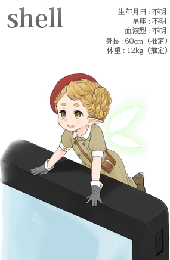

摘要
本文简要介绍Shell。

前言
创世纪（1970 年 1 月 1 日）起经过数年后被目击到的妖精。会寄宿在家中，有着类似于棕精灵（Brownie）的生活方式，向她们拜托家务事或者杂活的时候，会回答两次并接受的温顺孩子。
她们不常出现在人类存在的地方，因为言语不通，会用信件交流。如果拜托的事情说得比较含糊的话，有可能会造成误解而发生不得了的事情。对此的技巧是明确地像“做那个做这个>放在这里”这样有顺序地将要拜托她们做的事写好。如果对拜托的事理解得很好的话，她们会在夜里将事情都处理好。如果很好地完成了工作的话，请别忘了在第二天的晚上放上作为谢礼的方糖。
Shell 中有各种各样的种族。现在已确认的种族中比较有名的有：“ba”、“c“、”k”、”tc”、“z”等等。其服装根据种族不同而不同，我所目击到的是一只身高60cm左右、穿着巴宝莉的儿童服装的个体。恐怕人们目击到最多的是”ba”种。个人而言我也想遇到身高更高一些、尖耳朵的“z”种，现在虽然知道如何写信，却从未见过实物。
尽管她们会在同一个屋子里居住，却很少有人有机会见到，也不如何才能遇到她们。
有一种说法是，每天都把写程序这一仪式进行到午夜、勉强靠咖啡因支撑着抬起头的状态下突然向屏幕看去，能够看到她的身影。确实我遭遇她，也是在公司里熬夜写程序的时候。
Shell 的个体非常多，据说每家每户都会有一只。在大家的家里，实际上有着许多的她们居住着、等着来信也说不定。
—— 文／渡辺将人
子恒喵很喜欢渡辺将人先生写的这段描述Shell的话，俏皮又可爱。子恒喵刚接触Linux的时候，面对着黑乎乎的终端窗口，努力适应着命令行操作。现在想来，Shell小精灵对子恒喵的帮助真是非常大，哈哈。
每当子恒喵打开Terminal，第一个见到的总是Shell小精灵，她尽职尽责的将喵的指令传达给内核，让喵可以舒舒服服地使用计算机。
Shell是什么

Shell，顾名思义，就是壳。这是一个很形象的比喻，操作系统内核帮助我们管理着硬件，向上提供一套统一的接口，使得计算机使用者不需要关系如何去操作CPU，如何去读写磁盘，如何去连接网络。操作系统内核帮我们把这些事都做啦。
但是，让用户直接使用操作系统内核是不合适的，操作系统内核本身非常复杂，细节很多，不容易使用；而且，让没有经验的使用者直接操作内核是很危险的事情。
所以啊，Shell壳程序就应运而生啦。Shell在操作系统内核与用户层之间搭建起一座桥梁，将用户的指令翻译给操作系统内核，让用户可以友好地使用计算机，内核也可以安心的工作。
正如Linus大神所说的，用户是不使用操作系统本身的，用户使用的是搭建在操作系统之上的应用软件。
Shell自从其诞生以来，已经经历了好多次的变革，从最早的命令行（CLI）到如今的图形界面（GUI），技术发展得太快啦。借助AI技术，AI版的Shell也是值得期待的。不管怎么样，Shell的变革的趋势都是使人们更便捷，更友好地使用计算机。
子恒喵个人还是比较偏爱命令行Shell啦。
Shell的前世今生
Shell壳程序的概念最早是由法国软件工程师Louis Pouzin提出来的，后来被应用到了Multics系统开发中。
后来啊，Unix系统诞生于贝尔实验室，Thompson shell是Unix系统上的第一个Shell，是Unix系统之父，C语言之父Ken Thompson写的。
在1978年发行的Unix第7版上，Bourne shell取代Thompson shell成为Unix系统上默认的标准Shell，它由AT&T贝尔实验室的Stephen R. Bourne，在1977年在Version 7 Unix中针对大学与学院发布的。其具有concise（简洁），compact（紧凑），fast（高效）的特点，属于系统管理shell。现在，Bourne shell 也是许多Unix系统的默认shell。
1987年，由布莱恩·福克斯为了GNU计划而编写了BASH，为Bourne shell的后继兼容版本与开放源代码版本，它的名称来自Bourne shell（sh）的一个双关语（Bourne again / born again）：Bourne-Again SHell。Bash是Linux系统默认的标准shell，macOS现在也是使用Bash作为默认命令行shell。
当然，除了Bourne shell及其衍生版本外，还有许多其他的shell: csh，tcsh，ash，kosh，zsh…
目前使用最广泛的命令行shell，还是Bash，学习的话，学Bash就可以啦。

再后来，就是图形化的shell啦，比如，Windows Explorer就是一个典型的图形Shell。
Shell与Shell Script
shell其实就是一支应用程序，用户通过shell来给计算机下达指令，访问操作系统内核。
shell脚本（shell script），则是为shell编写的脚本程序，由shell解释执行。由于shell不仅仅可以翻译指令，还兼具变量，控制流，子程序等等的功能，我们可以编写shell脚本程序，方便我们的工作。
Shell环境搭建
shell编程跟其他解释型脚本语言编程一样，只要一个能编写代码的文本编辑器和一个能解释执行的脚本解释器就可以了。
Linux，macOS，以及大部分Unix Like系统，都默认安装了Bash。
Windows就有点麻烦了，Windows默认不带Bash，Linux子系统或MinGW也不怎么好用，还是推荐使用Windows的同学安装一个Linux虚拟机。
子恒喵使用的是Linux系统，默认的shell就是Bash，接下来的学习也会在Linux上进行。
$ bash --version
GNU bash, version 4.2.46(1)-release (x86_64-redhat-linux-gnu)
Copyright (C) 2011 Free Software Foundation, Inc.
License GPLv3+: GNU GPL version 3 or later <http://gnu.org/licenses/gpl.html>
This is free software; you are free to change and redistribute it.
There is NO WARRANTY, to the extent permitted by law.
参考资料
- 编程语言拟人化(第二弹): http://blog.jobbole.com/63036/
- 鸟哥的Linux私房菜: http://cn.linux.vbird.org/linux_basic/0320bash_1.php
- GNU关于Bash的介绍: https://www.gnu.org/software/bash/